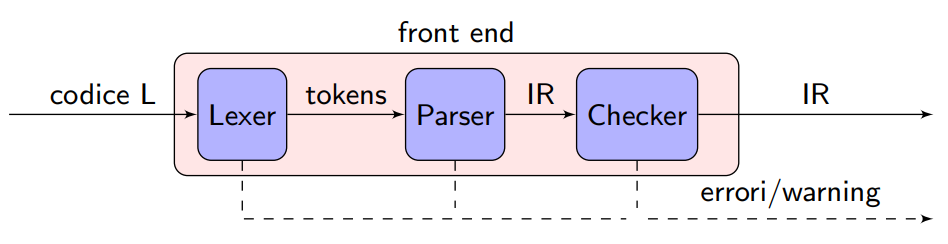
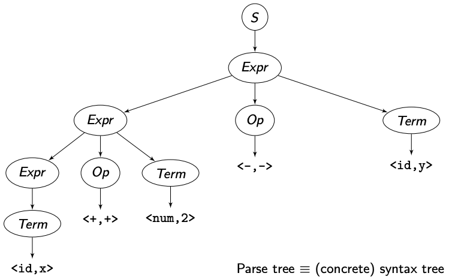
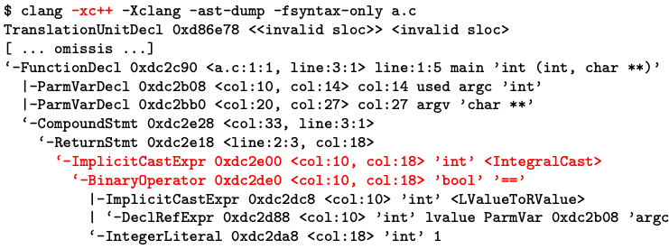
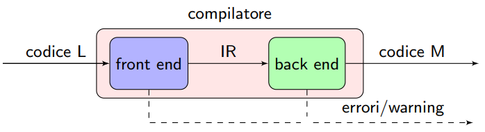
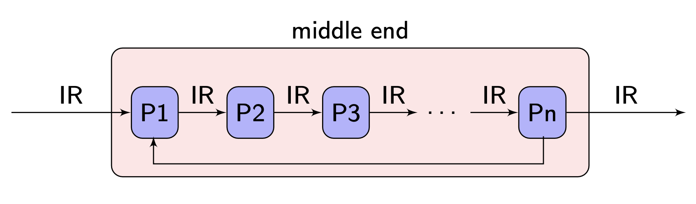

Visuale ad alto livello di astrazione

Un compilatore deve rispettare i seguenti requisiti:
- Riconoscimento di programmi validi/invalidi.
- Generazione di codice corretto.
- Gestione delle risorse, quale allocazione e deallocazione della memoria.
- Iterazione con il sistema operativo (e.g., linker dinamico).
Tradizionale compilatore a due passi

In un compilatore a 2 passi si vede una separazione delle responsabilità. In un normale processo di compilazione il codice $L$ raggiunge la parte di front end ("esperto del linguaggio") che produce una rappresentazione intermedia (IR) che viene mandata alla parte di back end ("esperto dell'architettura"), la quale si occuperà di produrre il codice macchina $M$.
Questa distinzione non è cosi marcata nei compilatori odierni.
È possibile avere più front end e/o back end:

Linguaggio IR
Il linguaggio IR (Intermediate Representation), è una rappresentazione intermedia utilizzata dal compilatore per descrivere il codice sorgente in una forma che sia più facilmente manipolabile e analizzabile durante le fasi di ottimizzazione e generazione del codice macchina. L'IR funge da ponte tra il front-end del compilatore, che analizza e interpreta il codice sorgente, e il back-end, che genera il codice macchina eseguibile.
Esistono diverse tipologie di linguaggi IR, ciascuna con caratteristiche e scopi specifici. Possiamo classificarle principalmente in tre categorie:
- Rappresentazioni Strutturali: queste rappresentazioni organizzano le informazioni in strutture gerarchiche, come alberi, grafi o DAG (Directed Acyclic Graph).
- Alberi di Sintassi Astratta (AST): rappresentano la struttura sintattica del codice in modo gerarchico, riflettendo la grammatica del linguaggio sorgente.
- Grafi e DAG: utilizzati per rappresentare le dipendenze tra le operazioni, in cui i nodi rappresentano le operazioni e gli archi le dipendenze tra di esse. I DAG sono particolarmente utili per evitare la ridondanza e per ottimizzare le espressioni comuni.
- Rappresentazioni Lineari: il codice è descritto come una sequenza di istruzioni eseguite in un ordine specifico. Le più comuni sono:
- Three-Address Code (TAC): ogni istruzione in TAC coinvolge al massimo tre indirizzi o operand (e.g., un’istruzione può essere del tipo
x = y + z, dovex,y, ezsono variabili o indirizzi di memoria). Questa forma è semplice e ricorda molto un linguaggio assembly, rendendo facile la mappatura diretta sul codice macchina. - Stack-Machine Code: in questo modello, le operazioni sono eseguite utilizzando una pila (stack). Le istruzioni tipicamente eseguono operazioni come
push(per aggiungere valori alla pila), eseguire un'operazione (ad esempioadd), epop(per rimuovere e ottenere il risultato). Questo approccio è semplice da implementare, ma meno efficiente rispetto a TAC in termini di accesso diretto agli operand.
- Three-Address Code (TAC): ogni istruzione in TAC coinvolge al massimo tre indirizzi o operand (e.g., un’istruzione può essere del tipo
- Rappresentazioni Ibride: combinano aspetti delle rappresentazioni strutturali e lineari. La forma più comune è:
- CFG (Control Flow Graph) per BB (Basic Block): in questa rappresentazione, il codice è suddiviso in "Basic Blocks" (BB), ossia sequenze di istruzioni che vengono eseguite linearmente senza interruzioni. Questi blocchi sono poi collegati tra loro tramite un CFG, che rappresenta le possibili transizioni di flusso tra i blocchi.
Attualmente, la maggior parte dei compilatori moderni utilizza rappresentazioni ibride, poiché queste permettono di sfruttare i vantaggi sia delle rappresentazioni lineari sia di quelle strutturali. La combinazione di Basic Blocks (lineare) con CFG (strutturale) consente al compilatore di eseguire sofisticate analisi e ottimizzazioni sul codice, facilitando la gestione dei salti condizionali e dei loop, e migliorando l'efficienza complessiva del codice generato.
Il front end del compilatore
Il compito del front end è quello di riconoscere se i programmi (di un codice $L$) sono validi (e invalidi), segnalando errori e warning facilmente leggibili, per infine produrre codice IR (e strutture dati ausiliarie).
Decomposizione del front end

Il front end è diviso in 3 parti:
- Lexer: si occupa di effettuare l'analisi lessicale, che si occupa di scannerizzare l'input, dividerlo in blocchi e produrre dei token. Riconosce (ferma sono quello che considera illegale, ma in caso di dubbio lascia passare) ed etichetta le parole contenute nell'input.
- Parser: che si occupa di effettuare l'analisi sintattica e produrre una IR (i.e., un'astrazione dell'abstract syntax stree). L'analisi viene effettuata in modo libera dal contesto.
- Checker: che si occupa di fare l'analisi di semantica statica su problemi decidibili (e.g., esistenza di una variabile, chiamate di funzione corrette). L'analisi viene effettuata in modo dipendente dal contesto.
Esempi di analisi libere dal contesto
- Il controllo di bilanciamento delle parentesi è un operazione che si può effettuare in modo libero dal contesto.
- Il controllo della validità di una variabile non è libero dal contesto.
La maggior parte degli errori presenti in un codice $L$, sono riscontrati nella fase di compilazione svolta del Checker.
Lexer
Il processo di analisi lessicale (lexing) rappresenta la prima fase del front end di un compilatore, dove il codice sorgente viene suddiviso in unità significative chiamate "token".
Un token è una coppia $<\text{part_of_speech,\ lexeme}>$ composta da 2 parti:
- $\text{part_of_speech}$, che definisce la categoria lessicale a cui appartiene la parola letta;
- $\text{lexeme}$, che corrisponde alla sequenza di caratteri che produce quella categoria.
Esempi di token: $<STR,\ ''Hello''>$, $<INT,\ 42>$.
Specifica vs implementazione (Lexer)
La specifica del lexer definisce in modo formale e rigoroso quali sono i token validi del linguaggio. Questa definizione avviene utilizzando un linguaggio formale che risulti comprensibile e utilizzabile dal progettista umano. Lo strumento principale per questa specifica sono le Espressioni Regolari (RE), che forniscono un modo conciso per descrivere i pattern che i token devono seguire.
Le espressioni regolari sono potenti ma presentano alcune limitazioni (e.g., quando si tratta di esprimere intersezioni e complementi di insiemi di caratteri). Per superare queste limitazioni, possono essere estese con operatori aggiuntivi che ne aumentano la flessibilità e consentono di specificare in modo più dettagliato i token richiesti.
Un esempio classico di espressione regolare per identificare gli identificatori di un linguaggio è il seguente:
DIGIT = [ 0 - 9 ]
LETTER = [ a-zA-Z ] | [ _ ]
ID = LETTER ( LETTER | DIGIT ) *
In questo caso:
[ 0 - 9 ]e[ a-zA-Z ]rappresentano le character class (i.e., insiemi di caratteri definiti attraverso intervalli).- I caratteri in maiuscolo fanno parte del linguaggio specificato, mentre i caratteri in minuscolo sono meta-sintassi utilizzata per definire i token.
Le espressioni regolari consentono diverse forme di abbreviazione, come l'iterazione positiva, il complemento, e le altre convenzioni che rendono più chiara la specifica del token.
L'implementazione del lexer si concentra sulla trasformazione delle specifiche dei token in un meccanismo efficiente per la loro identificazione nel codice sorgente. Questa fase è critica dal punto di vista dell'efficienza, poiché il lexer è l'unica componente del front-end che deve leggere l'intero input del programma.
La struttura più comune utilizzata per implementare un lexer è un DFSA (Deterministic Finite State Automaton), un automa a stati finiti deterministico che, partendo da uno stato iniziale, si muove attraverso una serie di stati in base ai caratteri in ingresso fino a identificare un token. Questi DFSA vengono generalmente generati in modo automatico a partire dalle espressioni regolari specificate (grazie a strumenti come lex o flex). Tuttavia, esistono eccezioni: il compilatore Clang utilizza un DFSA costruito manualmente per garantire un maggiore controllo e ottimizzazione nell'analisi lessicale.
La fase di specifica definisce "cosa" è un token in modo formale, mentre l'implementazione si occupa del "come" riconoscere questi token in modo efficiente.
Parser
Il parser è responsabile dell'analisi sintattica, ovvero della fase in cui una sequenza di token, prodotta dal lexer, viene interpretata per verificarne la struttura secondo le regole grammaticali del linguaggio sorgente. L'obiettivo è produrre una rappresentazione intermedia (IR) che catturi la struttura sintattica del programma. Questa rappresentazione può assumere la forma di un parse tree (detto anche Concrete Syntax Tree, CST) o di un Abstract Syntax Tree (AST).
- Parse Tree (Concrete Syntax Tree): rappresenta fedelmente la grammatica del linguaggio, includendo tutti i dettagli della sintassi. Tuttavia, è raramente utilizzato direttamente nelle fasi successive del compilatore a causa della sua complessità e verbosità.
- Abstract Syntax Tree (AST): è un'astrazione del parse tree che omette i dettagli irrilevanti (e.g., i simboli delle parentesi e le regole di produzione inutili). L’AST è più compatto e si concentra sulla struttura semantica del codice, rendendolo più adatto per le fasi successive di analisi e ottimizzazione.
Specifica vs implementazione (Parser)
La specifica di un parser definisce quali sequenze di token costituiscono programmi validi secondo le regole del linguaggio. Per fare ciò, si utilizza una Context-Free Grammar (CFG) (i.e., grammatica libera dal contesto), che è in grado di esprimere le strutture sintattiche più comuni nei linguaggi di programmazione.
Le CFG sono composte da un insieme di regole di produzione che definiscono come i simboli non terminali possono essere sostituiti da combinazioni di terminali e altri non terminali. Tuttavia, lavorare con le CFG presenta diverse sfide, come la gestione dell'ambiguità (e.g., dove una stessa stringa può essere generata da più di una derivazione), l’efficienza del parsing e il determinismo.
L'implementazione del parser prevede la costruzione di un meccanismo in grado di riconoscere le strutture definite dalla CFG. Questo riconoscimento avviene tramite un PDA, un automa a pila non deterministico che ha la capacità di gestire un contesto grazie all'uso di una pila.
Il PDA può essere implementato direttamente (in modo implicito) utilizzando tecniche come la ricorsione e il backtracking. Questo approccio permette di definire parser ricorsivi discendenti che seguono direttamente la struttura della grammatica specificata. In alternativa, è possibile utilizzare tool di generazione automatica di parser (e.g., Yacc, Bison o ANTLR) che producono un parser partendo dalla grammatica specificata.
Possiamo scrivere una grammatica libera da contesto come $G = \langle S, N, T, P \rangle$:
- $N$: simboli non terminali (categorie sintattiche).
- $T$: simboli terminali (categorie lessicali, i.e., token prodotti dal lexer).
- $S \in N$: simbolo iniziale.
- $P \subseteq N \times (N \cup T)^*$: produzioni della grammatica.
Esempio di CFG
Supponiamo di avere la seguente grammatica per espressioni additive: $$ \begin{array}{l} S = Expr \ N = { Expr,\ Op,\ Term } \ T = { id,\ num,\ +,\ - } \ P = \begin{cases} S \to Expr, \ Expr \to Term \mid Expr ; Op ; Term, \ Op \to + \mid -, \ Term \to id \mid num \end{cases} \end{array} $$ Con le seguenti abbreviazioni:
- $N$, $T$ e $S$ impliciti
- Numerazione produzioni:
1 S -> Expr
2 Expr -> Term
3 | Expr Op Term
4 Op -> +
5 | -
6 Term -> id
7 | num
L'esempio di derivazione di x + 2 - y (top down) sarà:

L'esempio di parsing di x + 2 - y (bottom up) sarà:

Ma questo parse tree può essere trasformato nel seguente abstract syntax tree (AST):

Checker
Il checker è responsabile della Context-Sensitive Analysis (CSA), un'analisi semantica statica che trasforma un AST "grezzo" in un AST arricchito con informazioni contestuali. Queste informazioni includono dettagli come i tipi di dato, le conversioni implicite e la risoluzione del sovraccarico (overloading).
In molti casi, il checker e il parser sono fortemente integrati. In queste implementazioni, l'AST "grezzo" non viene generato come passaggio intermedio; invece, si costruisce direttamente un AST arricchito a partire dal parse tree. Questo approccio consente di migliorare l'efficienza e la coerenza, riducendo la complessità complessiva del processo di analisi.
Specifica vs implementazione (Checker)
La specifica del checker ha il compito di definire in modo rigoroso i programmi validi, ma questa definizione rigorosa può risultare complessa e non sempre standardizzata. La difficoltà di formalizzare la semantica di un linguaggio di programmazione porta spesso a utilizzare una combinazione di linguaggio naturale (come standard di linguaggio, manuali e documentazione del compilatore) e semantiche formali, come sistemi di regole. Tuttavia, questo approccio può ancora generare ambiguità e rendere la comprensione delle specifiche problematica.
Nell’implementazione, la correttezza del checker è un aspetto cruciale. In passato, si utilizzavano grammatiche arricchite con attributi calcolati per gestire l'analisi semantica. Oggi, però, si preferiscono tecniche di Syntax Directed Translation (SDT). Gli SDT consistono in programmi specializzati per visitare l'albero di sintassi, e ciò spesso comporta la generazione di numerosi visitor.
Esempio di AST
Supponiamo di avere il seguente programma in C chiamato a.c:
int main(int argc, char* argv[]) {
return argc == 1;
}
Il dump dell'AST prodotto da clang sarà:

Mentre l'AST generato utilizzando la compilazione C++ sarà:

Il back end del compilatore
Il back end del compilatore ha il compito di prendere la rappresentazione intermedia (IR) generata dal front end e tradurla in un linguaggio macchina $M$ specifico per l'architettura target. Questo processo coinvolge la scelta delle istruzioni più appropriate per implementare le operazioni definite dalla IR, nonché la decisione su quali valori mantenere nei registri durante l'esecuzione del codice generato. Inoltre, il back end deve garantire che il codice prodotto rispetti tutte le interfacce e i protocolli di sistema, come ad esempio la gestione delle eccezioni e il rispetto delle system call.


Il back end è generalmente suddiviso in tre sottoprocessi principali:
- Selezione delle istruzioni: durante questa fase, il compilatore traduce le operazioni della IR in istruzioni specifiche per l'architettura target. Questo processo richiede di selezionare la sequenza di istruzioni macchina più efficiente per realizzare l'operazione desiderata, tenendo conto delle caratteristiche e delle limitazioni dell'hardware, come i set di istruzioni disponibili e la presenza di istruzioni complesse.
- Allocazione dei registri: una volta selezionate le istruzioni, è necessario decidere quali variabili verranno mantenute nei registri dell'hardware per minimizzare l'accesso alla memoria e ottimizzare le prestazioni. L'allocazione dei registri è un problema complesso poiché la maggior parte delle architetture ha un numero limitato di registri, il che richiede un'attenta pianificazione per ridurre i costi associati allo "spilling" (i.e., il trasferimento di dati dalla memoria ai registri e viceversa).
- Schedulazione delle istruzioni: l'ultima fase consiste nel determinare l'ordine ottimale di esecuzione delle istruzioni per sfruttare al massimo l'hardware disponibile. Questo include la gestione delle dipendenze tra le istruzioni e l'ottimizzazione per l'esecuzione in parallelo su architetture che supportano l'esecuzione simultanea di più istruzioni.
Le tre fasi descritte sopra rappresentano problemi di ottimizzazione estremamente complessi, appartenenti alla classe di problemi NPC (NP-Completo). Ciò significa che, in generale, trovare la soluzione ottimale è computazionalmente complesso, soprattutto per programmi di grandi dimensioni. Per questa ragione, i compilatori reali si affidano a tecniche euristiche, che cercano soluzioni "abbastanza buone" entro un tempo ragionevole, piuttosto che trovare la soluzione perfetta.
Queste tecniche euristiche possono variare dal semplice utilizzo di regole predefinite fino all'applicazione di algoritmi più sofisticati, come l'ottimizzazione locale, il branch and bound, o algoritmi genetici, a seconda delle esigenze di prestazioni e del contesto in cui il compilatore viene utilizzato.
Instruction selection
L'obiettivo della fase di instruction selection è produrre un codice che sia veloce (ottimizzato per il tempo di esecuzione) e che sia compatto (ottimizzato per l'uso della memoria). Per farlo, il compilatore deve sfruttare al massimo le caratteristiche specifiche dell'architettura target $M$. Questo processo può essere visto come un problema di pattern matching, in cui il compilatore cerca di mappare le operazioni della rappresentazione intermedia (IR) alle istruzioni macchina disponibili nel set di istruzioni dell'architettura target.
Dal momento che trovare la soluzione ottimale è generalmente molto complesso, questa fase si basa spesso sulla ricerca di ottimi locali, ovvero soluzioni approssimate che funzionano bene per sezioni specifiche del codice senza garantire l'ottimalità globale. Ad esempio, il compilatore potrebbe selezionare la sequenza di istruzioni più efficiente per un determinato blocco di codice, anche se ciò non garantisce che l'intero programma sia ottimizzato al massimo.
Register allocation
La fase di register allocation si occupa della gestione dei registri della CPU, che sono una risorsa estremamente limitata. L'obiettivo è assegnare variabili o valori temporanei a un numero finito di registri disponibili, cercando di minimizzare l'accesso alla memoria esterna. Quando non ci sono abbastanza registri per contenere tutte le variabili necessarie, si verifica il cosiddetto spilling, ovvero il trasferimento temporaneo di dati tra i registri e la memoria principale attraverso istruzioni di LOAD e STORE. Poiché queste operazioni sono costose in termini di tempo di esecuzione, è importante evitarle il più possibile.
Un approccio comune per risolvere il problema dell'allocazione dei registri è la colorazione di grafi. In questa tecnica, ogni variabile è rappresentata come un nodo in un grafo, e un arco tra due nodi indica che le due variabili sono attive nello stesso intervallo di tempo e quindi non possono condividere lo stesso registro. Il problema si riduce quindi a colorare il grafo con il minor numero possibile di colori, dove ogni colore rappresenta un registro fisico.
Instruction scheduling
L'instruction scheduling ha il compito di gestire le dipendenze tra le istruzioni a livello hardware, evitando inutili attese e ottimizzando l'uso delle unità funzionali della CPU. L'obiettivo è organizzare l'ordine delle istruzioni in modo che la CPU possa eseguire il maggior numero possibile di operazioni contemporaneamente, riducendo i tempi di inattività causati da dipendenze tra le istruzioni o dal tempo di latenza dell'hardware.
Questa fase può influenzare il tempo di vita dei valori nei registri, poiché cambiando l'ordine delle istruzioni potrebbe essere necessario mantenere un valore nei registri per un periodo di tempo più lungo o più breve. Di conseguenza, l'instruction scheduling può avere un impatto sulla fase di allocazione dei registri, rendendo necessaria un'interazione tra queste due fasi per ottenere un codice più efficiente.
Esempio di scheduling
Operazioni da seguire:
a <- b * c + d
e <- f + a
Dobbiamo tenere traccia dei cicli di clock per ogni istruzione: supponiamo che per load e store impieghiamo 2 cicli e con le altre operazioni solo 1.
Il codice pseudo-macchina sarà:
load @b -> r1
load @c -> r2
mult r1, r2 -> r3
load @d -> r4
add r3, r4 -> r5
store r5 -> @a
load @f -> r6
add r5, r6 -> r7
store r7 -> @e
Ma per esempio l'istruzione 3 non può essere eseguita il ciclo dopo di clock della istruzione 2 perchè la 2 ci impiega 2 cicli. Dobbiamo aggiungere un "nop" (operazione vuota, "attendi"). Questo porta ad una perdita di tempo e spreco di spazio. Possiamo ottimizzare queste sequenze di nop andando a diminuire i registri utilizzati.
Middle end
Il middle end è la componente del compilatore responsabile dell'analisi e trasformazione del codice IR, con l'obiettivo principale di migliorare il codice generato. Le ottimizzazioni mirano a soddisfare diverse metriche:
- Metriche classiche: riduzione del tempo di esecuzione e dello spazio in memoria.
- Metriche recenti: minimizzazione del consumo energetico, miglior utilizzo delle risorse hardware, e altre considerazioni legate all'efficienza.
Un aspetto cruciale è che il middle end deve sempre preservare la semantica del programma, garantendo che le trasformazioni effettuate non modifichino il comportamento originale del codice.

Il processo del middle end è suddiviso in una serie di passi, spesso eseguiti più volte (iterativamente). L'esecuzione iterativa viene gestita in modo tale da assicurare che il numero di iterazioni sia sempre finito.
Ogni passo mantiene la semantica del programma e si focalizza su due tipi principali di operazioni:
-
Passi di Analisi: questi passi hanno il compito di raccogliere informazioni dal codice IR che potrebbero essere utili per successive trasformazioni.
- Esempi:
- Identificazione di valori costanti (rilevare variabili che non cambiano mai durante l'esecuzione).
- Identificazione di codice o variabili inutili.
- Analisi di aliasing (per determinare se due puntatori o riferimenti possono puntare alla stessa area di memoria).
- Esempi:
-
Passi di Trasformazione: questi passi applicano effettivamente le modifiche al codice IR basandosi sulle informazioni raccolte.
- Esempi:
- Propagazione di valori costanti (sostituire variabili con i loro valori noti).
- Rimozione di codice inutile (come rimuovere codice condizionale per architetture non utilizzate).
- Inlining delle chiamate a funzioni (sostituire la chiamata a una funzione con il corpo stesso della funzione).
- Loop unrolling (replicare il corpo del ciclo più volte per ridurre il numero totale di iterazioni).
- Esempi:
Un singolo passo può dipendere da informazioni raccolte da altri passi e può anche invalidare informazioni precedenti. Questo rende la sequenza dei passi un aspetto cruciale, con l’ordine e le opzioni configurabili che spesso dipendono dal compilatore specifico.
Ad esempio, non passare tipi piccoli per riferimento nelle funzioni aiuta a evitare l'aliasing e rende il compilatore più efficiente nel generare codice ottimizzato.

Altri benefici della strutturazione del compilatore:
- Riutilizzo del front end: può essere utilizzato per implementare interpreti, offrendo una maggiore flessibilità.
- Compilazione JIT (Just-In-Time): permette di scegliere quali passi del middle end eseguire durante il runtime, adattandosi alle esigenze specifiche del contesto di esecuzione.
- Semplificazione dello sviluppo di analisi ad hoc: ad esempio, tool come clang-tidy utilizzano la struttura del middle end per eseguire analisi di codice personalizzate.
- Integrazione con IDE: fornisce supporto avanzato per editor, debugger, e altri strumenti di sviluppo, facilitando il lavoro degli sviluppatori.